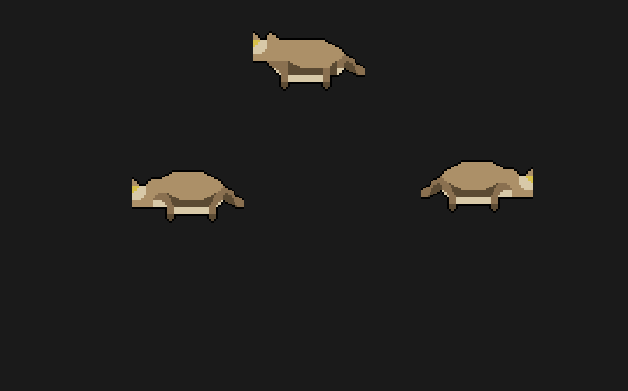

Three coyotes, forced on screen so the proof does not wait on where the demo's own random placement put a real one. The lower left faces east, the lower right faces west (mirrored about its own centre, not a second sprite -- compare the ears and tail), the one above is alert on its look frame. The box is 112 px, the exact size every body on the walked street draws at (player, resident, hostile, now wildlife too) -- the old code kept its own 8/16/32/64 ladder and stretched into it with the browser's own blur; this is the same box and the same crisp upscale everybody else already gets.

rest vs go differ by 12 of 256 pixels (a real stance change); in city mode the same box function reaches 28/56/112/224, the four rungs every body gets there -- 56 does not exist for anybody on the walked street any more under THE GROUND MAY ZOOM, THE PERSON MAY NOT (9/21), which postdates this row's own 9/7 text.